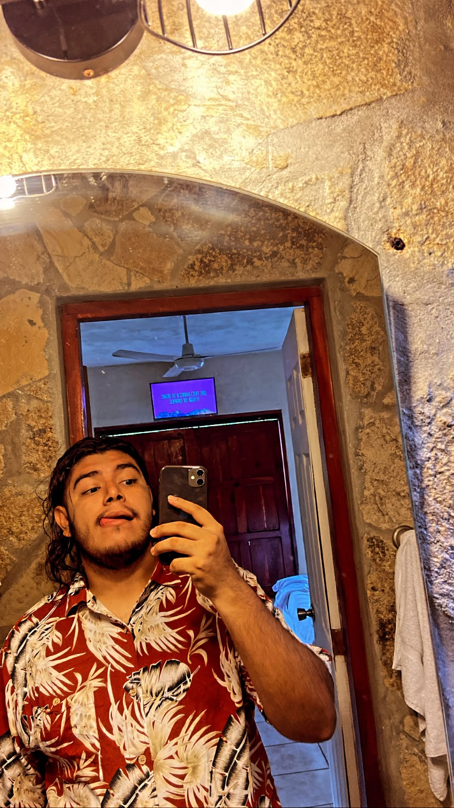

¡Hola! Mi nombre es Joel Arróliga, soy de Juigalpa Chontales en Nicaragua, y estudio Ingeniería de Sistemas en la Universidad Nacional de Ingeniería (UNI). Me interesa el desarrollo de software, la administración de sistemas informáticos y la creación de soluciones web que sean útiles para las personas.
Diseño de sistemas en Internet - 2026